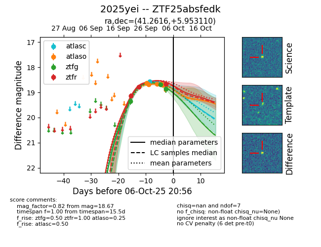
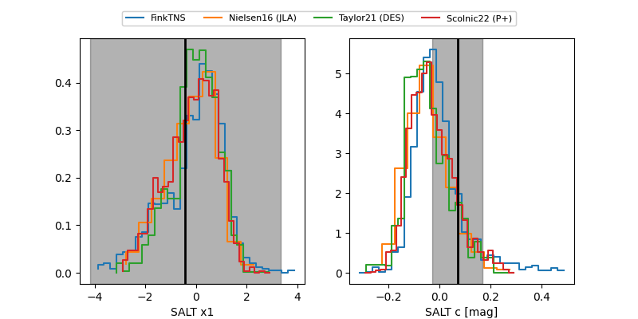

FINK: ZTF25absfedk
Lasair: ZTF25absfedk
ALeRCE: ZTF25absfedk
TNS: 2025yei
YSE: 2025yei
ZTF25absfedk (ztf,fink)
2025yei (tns,yse)
equatorial (ra, dec) = (41.2616,+5.95311)
galactic (l, b) = (166.8538,-46.99943)


last atlasc=18.57, atlaso=18.70, ztfg=18.87, ztfr=18.67
1 atlasc, 5 atlaso, 3 ztfg, 3 ztfr detections